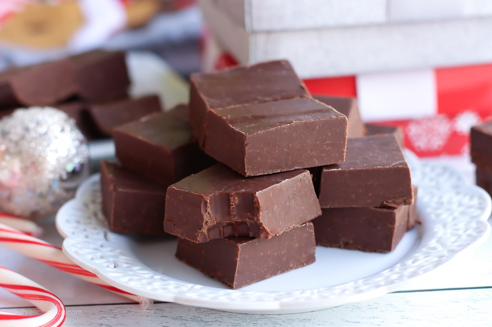

Chocolate Fudge of Heaven

Thank you, God for letting me exist with these chocolate fudges. Alhamdullilah.
First things first, do you like chocolate? No? Then why the fuck are you here?
If Yes, then welcome brother of mine to this delicious mouth-watering chocolate fudge recipe that I stole from some website.
Honestly, there's not much to say. Would you like to hear a tear-jerker story about how my grandma
taught me this recipe on her deathbed or something? No. Just go to the ingredients, dummy.
ingredients
- 1 and a half cups white sugar
- 1 (7 ounce) jar marshmallow creme
- 2/3 cup evaporated milk
- 1/4 cup butter
- 1/4 teaspoon salt
- 2 cups milk chocolate chips
- 1 cup semisweet chocolate chips
- 1/2 cup chopped nuts
- 1 teaspoon vanilla extract
Steps
- Line an 8-inch square pan with aluminum foil; set aside.
- Combine sugar, marshmallow cream, evaporated milk, butter, and salt together in a large saucepan over medium heat; bring to a full boil and cook for 5 minutes, stirring constantly.
- Remove from heat and add milk chocolate chips and semisweet chocolate chips; stir until chocolate is melted and mixture is smooth. Stir in nuts and vanilla. Pour into prepared pan; chill in refrigerator for 2 hours, or until firm.
- Enjoy your fudge, fudgeface.